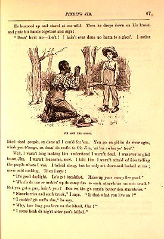

|
 The relationship between Jim and Huck begins in Chapter 8, when they coincidentally meet after each has run away to Jackson's Island looking for freedom. To get away from Pap, Huck has staged his own murder, so when he appears before Jim, Jim thinks he's seeing a ghost: "He bounced up and stared at me wild. Then he drops down on his knees and puts his hands together and says: 'Doan' hurt me--don't! I hain't ever done no harm to a ghos.'" How should we "read" this image of a superstitious black man on his knees, pleading with an armed white boy who stands over him? In three other places in the novel (all illustrated by Kemble), whites carry rifles to re-enslave runaways or to keep them from escaping. Huck, however, not only reassures Jim immediately that "I warn't dead," but when he learns that Jim has run away he promises not to tell on him. As part of his prayer to the "ghos'," Jim reminds Huck that he "'uz awluz yo' fren'," and Huck tells us that "I was ever so glad to see Jim." The nature of Jim and Huck's larger relationship is very complex. Most readers want to see the meeting on Jackson's Island as the beginning of a friendship, but as the visual starting point for their life together, this illustration draws a pretty blunt picture of the power dynamics between the races. The Barrett Collection, UVA PS1305 .A1 1885b |